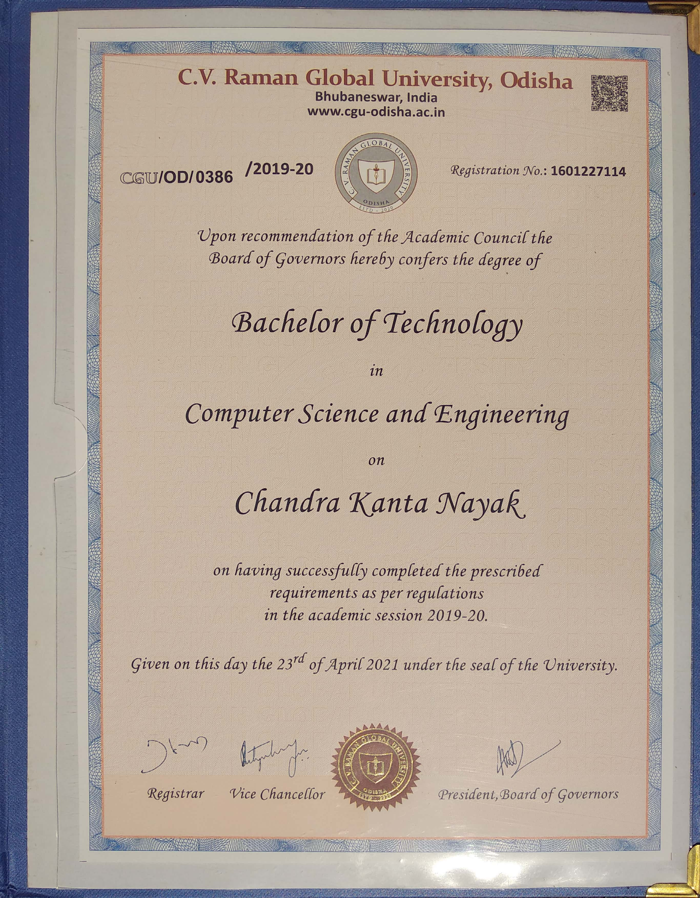

Back to Academic Page

You can manually turn it like a real certificate.
You can also use buttons to turn.
Previous
Next
Got the Page !!
And also closed the book. Now you can view the page.
View the page